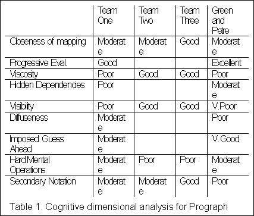
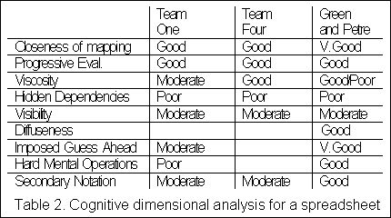

|
Nicholas P. Wilde
Closeness of Mapping - Do primitives in the language map closely to operations in the problem domain?
Diffuseness/Terseness - The amount of code needed to express a solution.
Progressive Evaluation - Can partially completed solutions be executed to obtain feedback?
Viscosity - Resistance to modification, including:
Repetitiousness viscosity - A single change at the domain level requiring many changes at the program level.
Knock-On viscosity - A change in the code violating internal constraints in the program, whose resolution may violate further internal constraints, etc.
Scope viscosity - A change in the size of the input data set requiring changes to the program structure itself.
Hidden Dependencies - A relationship between components such that one is dependent upon the other, and the dependency is not visible.
Visibility - Whether required material is accessible without cognitive work on the user's part.
Side-by-side-ability - The ability to view different parts of the code at once.
Imposed Guess Ahead - The language or environment requiring the user to make decisions prematurely.
Hard Mental Operations - Notational conventions or combinations of operators that require considerable cognitive effort to understand.
Secondary notation and escape from formalism - The ability to add extra semantics to the finished program via program indentation, formatting, comments, etc.
A more complete discussion of each cognitive dimension can be found in [2,3].
As part of my visual languages class at the University of Montana this year, students were given and asked to read the first half of [3], which fortuitously introduces each of the CDs in abstract without discussing specific languages in great detail. We then spent approximately 2 lecture periods as a class discussing the various CDs in abstract and as applied to various textual languages in the student's experience (mostly C and Ada). During the rest of the semester, the 12 students in the class were split into 4 groups and asked to apply the cognitive dimensions framework to the evaluation of several different visual languages, with which they had varying degrees of familiarity. These included Prograph - a dataflow based language available on the Macintosh computer, and a spreadsheet of there own choosing.
The students involved were all graduate students or seniors in computer science, or graduate students in another science with a computer science background and interest. Five had take an HCI course from me the semester before - the rest had not. None had any previous experience with Prograph. Eight had some experience with spreadsheets, while two had in depth experience.
The students were asked to evaluate languages using a choice of techniques, so not each team evaluated each language using the cognitive dimensions framework. The language and reference materials were made available to each team. Teams that did use the cognitive dimensions framework were not required to report on all CDs available, so not all CDs were evaluated for each language.
Nevertheless, the data thus collected provide enough common ground to give some sense of the amount of agreement on the application of the framework to the languages presented. Green and Petre also evaluate Prograph and Excel in the latter half of [3] (not available to the students at the time the evaluations were made). A (very broad brush) categorization of the results from individual team's evaluation of Prograph, along with Green and Petre's, is presented in Table 1 and for spreadsheets in Table 2.


The major areas of disagreement for Prograph were viscosity, hard mental operations, visibility, and secondary notation; and for spreadsheets, viscosity and hard mental operations. There was more agreement on the CDs for spreadsheets than for Prograph. This may reflect the student's greater familiarity with spreadsheets, and the longer time spent discussing the spreadsheet as a language in class prior to doing the evaluation. The seemingly unanimous agreement on hidden dependencies is most likely artificial, as we discussed in detail the problem of hidden formula dependencies in spreadsheets prior to their doing the evaluation.
A baseline is lacking - without a common reference point, it is hard to agree whether one team's evaluation of a language with regard to a particular CD as "good" has any meaning as compared to another's - witness team One, who in general seemed to be harsher with their judgments than others.
Several dimensions are subjective in nature - Several of the CDs as they now stand are relatively subjective - witness "hard mental operations," where one has to ask: What is hard? This gave rise to disagreements on this CD for spreadsheets, as one of our teams felt that nested "ifs" in spreadsheet formula qualify as a hard mental operation, while the original authors apparently did not.
Where to take the "hit" for various language idiosyncrasies can be problematic - Sometimes there was agreement on a particular feature of a language being a problem, but that agreement manifest itself as judgments on different CDs. Green and Petre, for instance, downgraded Prograph's closeness of mapping due to the "programming games" required of using the concepts of "success" and "failure" for loop termination, while several of us counted this as a hard mental operation, instead.
Viscosity is a many splendored thing - Because of the several different types of viscosity (repetitiousness, knock-on, and scope) and the several different places it can show up (algorithm, layout, etc.), many felt the concept of viscosity was overly broad and confusing.
As tools for discussion, they're useful - While we didn't agree on every single CD at the end of each evaluation period (and indeed, still don't) the class as a whole felt the cognitive dimensions framework formed a useful basis in which to ground discussions of various language features. As vehicles for discussion of language features, they raised the level of discussion by providing a grounding through which various aspects of languages could be debated and explored.